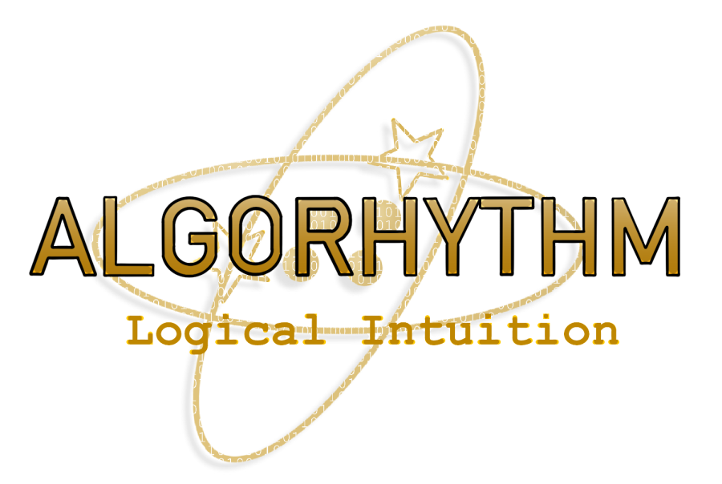

<DOCTYPE html>
</html lang = 'en'>
  <head>
    <meta charset='UTF-8'/> 
    <title>Logical Intuition</title> 
    <link href='styles.css' rel="stylesheet" />
  </head>
  <body>

   <div class='header'>
     <div class='logo'></div>
      <ul class='menu'>
       <li><a href='index.html'><strong>Home</strong></a></li>
       <li><a href='about.html'><strong>About Dave</strong></a></li>
       <li><a href='favorites.html'><strong>Favorite Things</strong></a></li>
       <li><a href='logical.html'><strong>Logical Intuition</strong></a></li>
      </ul>  
     </div>
   <div class='container'>
      <p><h2><strong>Algorhythm:</strong><em>logical intuition</em></h2></p><br>
      <ol>
        <li>I like lists. No, I <em>love</em> lists!</li>
        <li>When start a project I see it all before me like an exploded view of a mechanical schematic.</li>
        <li>I have thought processes formed of groups of thoughts, much like algorythms.</li>
        <li>Like my bio states, I live by my gut instinct.</li>
        <li>My logical process outputs to my gut instinct, which checks it against my God-consciousness.</li>
        <li>This <em>logical intuition</em> is my life's compass.</li>
        <li>I would drive ships using it, which was unsettling to people in the beginning because they couldn't understand what drove my conclusions. Often, I was
            unable to explain my reasoning succinctly enough in the span of a decision at sea.</li>
        <li>It was my outputs which convinced others of its validity.</li>
        <li>Understanding I think algorythmically, I chose ALGORYTHM because, despite the fact music is very mathematical, it induces near-spiritual feelings 
            across a broad spectrum. It seemed like a spiritual parallel and I could tie it to my intuition.</li>
        <li>The symbol is the Electronics Technician (ET) Navy rating symbol to denote enlisted technicians and Electronic Warrant Officers.</em></li>
        <li>My oldest son created the logo on ProCreate. Funny, because I didn't think he could help me and I was a little dismissive. Not only this, but
            he created it in less than a half an hour. Funny.</li>
        <li>Thank you, <strong>#VetsWhoCode</strong>, for this opportunity!</li>
      </ol>
    </div>
  </div>
</body>
</html>
	